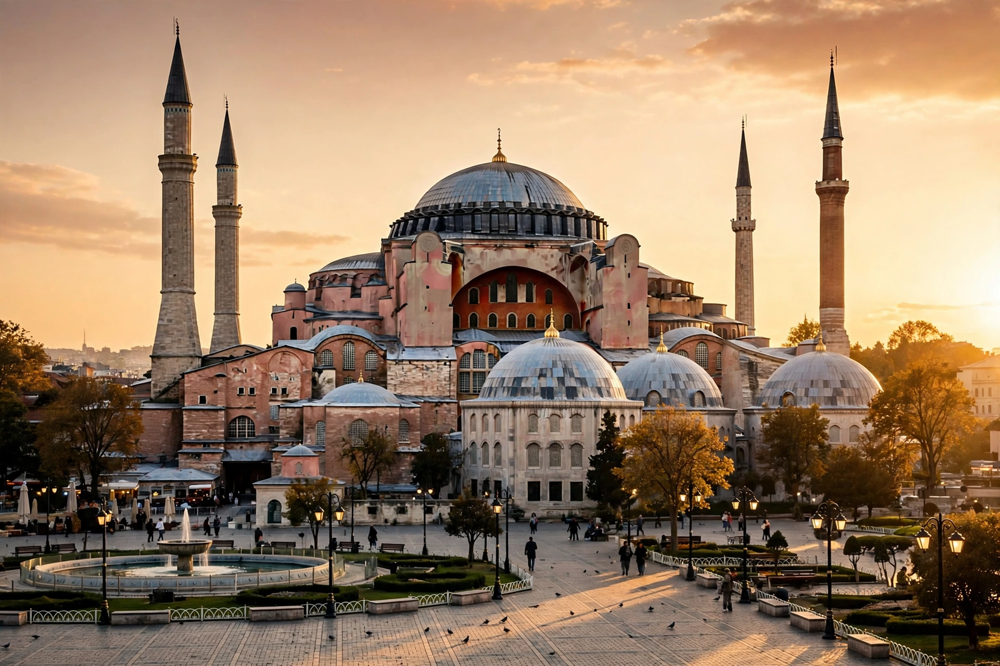

Constantinople
From Wikipedia, the free encyclopedia

[Image: Hagia Sophia in Istanbul — great dome, semi-domes and minarets]Hagia Sophia in Istanbul — great dome, semi-domes and minarets
Constantinople (Greek: Konstantinoupolis, 'city of Constantine') was the capital of the Roman Empire and later of the Byzantine Empire, the Latin Empire and the Ottoman Empire. Founded by the emperor Constantine the Great in AD 330 on the site of the ancient Greek city of Byzantium, it stood at the crossroads of Europe and Asia, controlling the straits between the Black Sea and the Aegean.
For more than a thousand years Constantinople was one of the largest and wealthiest cities in Europe, protected by the formidable Theodosian Walls and centred on monuments such as the Hagia Sophia, the Hippodrome and the Great Palace. It preserved Roman law, Greek learning and Orthodox Christianity long after the western empire fell. The city was sacked by the Fourth Crusade in 1204, recovered by the Byzantines in 1261, and finally conquered by the Ottoman sultan Mehmed II on 29 May 1453 — an event traditionally marking the end of the Middle Ages.
Under the Ottomans the city — known in Turkish as Istanbul, a name officially adopted for general use in 1930 — remained an imperial capital until 1922. Modern Istanbul, Turkey's largest city, still occupies the site, and the historic areas of the old city are a UNESCO World Heritage Site.
History
Byzantium, a Greek colony traditionally founded around 657 BC, was refounded by Constantine as 'New Rome' and dedicated on 11 May 330. Constantine and his successors adorned it with forums, palaces, churches and aqueducts; the population grew to several hundred thousand. Under Justinian I in the sixth century the city saw both the Nika riots and the rebuilding of Hagia Sophia (completed 537), as well as the codification of Roman law.
The city withstood sieges by Persians and Avars (626), Arabs (674–678 and 717–718), Bulgars and Rus', protected by its land walls, sea walls and Greek fire. The sack of 1204 by the Fourth Crusade shattered its wealth; the restored empire after 1261 was a shadow of its former extent, shrinking to little more than the city and its hinterland by the fifteenth century.
Fall of 1453
Sultan Mehmed II besieged the city from April 1453 with a large army and great bombards that battered the Theodosian Walls. The last emperor, Constantine XI Palaiologos, died in the fighting on 29 May 1453. Hagia Sophia was converted into a mosque, and Constantinople became the Ottoman capital, repopulated and rebuilt with monuments such as the Topkapi Palace and the Grand Bazaar.
Legacy
Constantinople preserved classical texts that later fed the Renaissance, transmitted Roman law to modern Europe, and remains the seat of the Ecumenical Patriarchate of Constantinople, the senior see of the Eastern Orthodox Church. Its seven-hilled site, Golden Horn harbour and Bosphorus shoreline still define modern Istanbul.
See also
Byzantine Empire · Roman Empire · Ottoman Empire · Hagia Sophia · Byzantium · Mehmed II